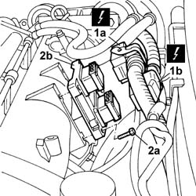
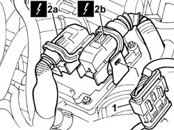
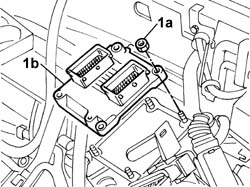
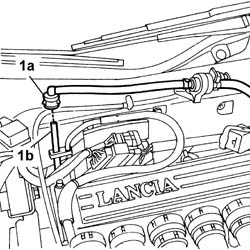
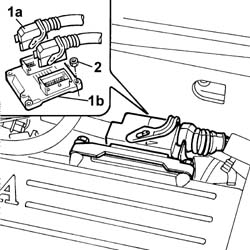

1056B82 Injection/ignition system CONTROL UNIT (one) - R.R.
- Path
- Procedures > 10 ENGINE > 1056 PETROL FUEL INJECTION SYSTEM > 1056B MULTI-POINT INJECTION SYSTEM (MPI) > 1056B82 Injection/ignition system CONTROL UNIT (one) - R.R.
- Kind
- repair procedure (removal / refitting; the operation number is the code)
- Applies to
- engines: 2.0 TB, 2.4 20V, 3.0 V6, 3.2 V6; all production periods
- Interactive page
- https://sloeber94.github.io/elrnDB-lThss/en/#/75037
Applies to: engines: 2.0 TB; all production periods
 Removing
Removing
 Refitting
RefittingSee in Op. 7040D50 ENGINE COMPARTMENT UPPER SOUND INSULATION SHIELD - R.R.
See in Op. 1016A40 Ignition COIL COVER on cylinder head - R.R.
 | Description | Connector |
|---|---|---|
Engine management control unit | M010A |
| Description | Connector |
|---|---|---|
Engine management control unit | M010B |

Applies to: engines: 2.0 TB; all production periods
Refitting
Removing | Description | Connector |
|---|---|---|
Engine management control unit | M010A |
| Description | Connector |
|---|---|---|
Engine management control unit | M010B |
See in Op. 1016A40 Ignition COIL COVER on cylinder head - R.R.
See in Op. 7040D50 ENGINE COMPARTMENT UPPER SOUND INSULATION SHIELD - R.R.
Applies to: engines: 2.4 20V; all production periods
Removing
Refitting- Make sure that the ignition key is in the OFF position, then disconnect the negative battery terminal.
See in Op. 1016A40 Ignition COIL COVER on cylinder head - R.R.
1. Release the dashboard/engine coupling from the mounting bracket.
2. Disconnect the electrical connections (2a) and (2b) from the injection/ignition system control unit.
| Description | Connector |
|---|---|---|
2a | Engine management control unit | M010A |
| Description | Connector |
|---|---|---|
2b | Engine management control unit | M010B |

Applies to: engines: 2.4 20V; all production periods
1. Undo the nuts (1a) and remove the injection/ignition system control unit (1b).

Applies to: engines: 2.4 20V; all production periods
Refitting
Removing- Proceed with the refitting following the instructions given below.
- Position the injection/ignition system control unit on the bracket and secure it using the nuts.
- Connect the electrical connections to the injection/ignition system control unit.
| Description | Connector |
|---|---|---|
. | Engine management control unit | M010A |
| Description | Connector |
|---|---|---|
. | Engine management control unit | M010B |
- Position the dashboard/engine coupling on the mounting bracket.
See in Op. 1016A40 Ignition COIL COVER on cylinder head - R.R.
- Connect the negative battery terminal.
Applies to: engines: 3.0 V6, 3.2 V6; all production periods
Removing
Refitting- Open the boot and disconnect the negative battery terminal.
1. Disconnect the anti-evaporation pipe (1b) from the rapid connector (1a).

Applies to: engines: 3.0 V6, 3.2 V6; all production periods
- Disconnect the connectors (1a) from the engine management control unit (1b).
| Description | Connector |
|---|---|---|
1a | Engine management control unit | M010A |
| Description | Connector |
|---|---|---|
1a | Engine management control unit | M010B |
1. Undo the bolts (1a) fixing the engine management control unit.

Applies to: engines: 3.0 V6, 3.2 V6; all production periods
- Remove the control unit.
Applies to: engines: 3.0 V6, 3.2 V6; all production periods
Refitting
Removing- Fit the control unit tightening the fixing bolts.
- Connect the connectors.
| Description | Connector |
|---|---|---|
. | Engine management control unit | M010A |
| Description | Connector |
|---|---|---|
. | Engine management control unit | M010B |
- Connect the anti-evaporation pipe rapid connector.
- Connect the negative battery terminal.
Topics linked from this page (3)
- 1016A40 Ignition COIL COVER on cylinder head - R.R.
- 1056B81 CARRYING OUT SELF-LEARNING PROCEDURE FOR BASIC ELECTRONIC INJECTION/IGNITION (SINGLE) CONTROL UNIT
- 7040D50 ENGINE COMPARTMENT UPPER SOUND INSULATION SHIELD - R.R.
Topics that link to this page (33)
- B10 ENGINE DOES NOT START IN ANY CONDITIONS
- B13 ENGINE STARTS WITH DIFFICULTY
- B20 ENGINE STARTS AND CUTS OUT STRAIGHT AWAY
- D01 ENGINE NOT RUNNING SMOOTHLY (HESITATION)
- D02 ENGINE NOT RUNNING SMOOTHLY (NOT FIRING PROPERLY)
- D05 ENGINE DOES NOT ACHIEVE MAXIMUM PERFORMANCE
- D10 ENGINE IDLE IRREGULAR
- D21 THE ENGINE CUTS OUT WHILST DRIVING
- D70 THE CRUISE CONTROL SYSTEM DOES NOT WORK IN ANY CIRCUMSTANCES
- D71 THE CRUISE CONTROL SYSTEM RECALL CONTROL IS NOT WORKING
- D72 THE CRUISE CONTROL SYSTEM + CONTROL IS NOT WORKING
- D73 THE CRUISE CONTROL SYSTEM DOES NOT SWITCH OFF WHEN THE CLUTCH PEDAL IS PRESSED
- D74 THE CRUISE CONTROL SYSTEM DOES NOT SWITCH OFF WHEN THE BRAKE PEDAL IS PRESSED
- D75 THE CRUISE CONTROL IS NOT WORKING
- K19 FUEL CONSUMPTION GAUGE NOT WORKING
- K26 ENGINE COOLANT TEMPERATURE WARNING LIGHT NOT WORKING
- K100 MIL WARNING LIGHT NOT WORKING
- K101 M.I.L. WARNING LIGHT REMAINS ON - ENGINE STARTS
- K109 ENGINE OIL PRESSURE FAULT DIAPLAY AT THE MATRIX
- 1056B87 INJECTION/IGNITION CONTROL UNIT MOUNTING - R.R.
- 1072B10 INTAKE MANIFOLD - R.R. and Replace gasket
- 1072B54 HOSES CONNECTING AIR CHAMBER TO INTAKE MANIFOLD(S) - R.R.
- 1072D50 DEVICE (V.I.S.) with adjustable air ducts - R.R.
- 1088D36 CONNECTOR ON CRANKCASE FOR CYLINDER HEAD/CRANKCASE WATER CIRCUIT HOSE WITH THERMOSTAT CLOSED - R.R.
- 1088D38 CYLINDER HEAD/CRANKCASE WATER CIRCUIT HOSE WITH THERMOSTAT CLOSED - R.R.
- 1088D64 Rigid alternator rigid coolant return pipe - R.R.
- 1088D65 Flexible HOSE between thermostat and alternator coolant rigid return pipe - R.R.
- 2130A70 Rubber hose with built in flexible pipe for directing coolant to automatic transmission oil heat exchanger
- 5010A12 engine/heater line - r r
- 5010A16 Water return PIPE from heater - R.R.
- 5040A54 Pipe from drier filter to expansion valve - R.R.
- 5040A72 Pipe from expansion valve to coupling - R.R.
- 5040B31 Expansion VALVE on evaporator for automatic climate control system - R.R.